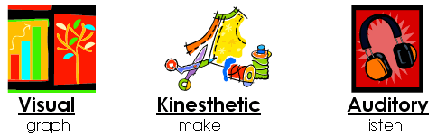

Activity 4 - How Students Learn
How do most students learn?Students take in and process information in different ways: by seeing and hearing, reflecting and acting, analyzing and visualizing. Teaching methods also vary. Some instructors lecture, others demonstrate or lead students to self-discovery; some focus on principles and others emphasize memory or understanding.
When learning styles and teaching styles are mismatched the students may become discouraged, or bored and inattentive, do poorly on tests and even become hostile in class. To overcome these problems, instructors should strive for balance of instructional methods, employing the following perceptual processes.
Students basically learn by taking in information THROUGH ONE OF THE 3 (OR A COMBINATION OF) THE FOLLOWING PERCEPTUAL PROCESSES:
|
|
AUDITORY PROCESSES (through listening) |
|
|
VISUAL PROCESSES (through looking/seeing) |
|
|
AND KINESTHETIC PROCESSES (through physical activity) |
Refer to How do students learn? and complete the activity.

Click on this link and complete a Learning Style Profile on yourself:
http://agelesslearner.com/assess/learningstyle.html
Look for a learning style chart to help you determine your learning style. http://www.cyberdriveillinois.com/departments/library/literacy/oltt/pdfs/learning_styles_chart.pdf
After taking the Learning Styles Self-assessment, what did you determine your personal learning style to be?
Whatever you want students to learn must be MADE COMPREHENSIBLE to all students. In other words, made so ALL STUDENTS UNDERSTAND EVERTHIING YOU WANT THEM TO LEARN.
In order to make what you want STUDENTS to learn comprehensible, you must involve all three perceptual processes. Students learn THROUGH LISTENING, OBSERVING, MOVING AND COMBINATIONS OF THE THREE.
How does this translate to classroom practice?
|
Listening - almost happens too much in isolation Observing - this includes reading Physical Activity - this includes talking, and writing |
Comprehensible Input-The Bottom Line
As we have determined, we all learn through listening, observing, moving, talking, and writing. Not only do teachers need to know the nuts and bolts, they must also know how to PRESENT the material. When input is comprehensible, students understand most aspects of what is required for learning, and the learning experience pushes them to greater understanding.
Therefore, everything we teach must be presented as COMPREHENSIBLE INPUT.
Making teacher talk comprehensible to students goes beyond the choice of vocabulary and involves presentation of background and context, explanation and rewording of unclear content, and the use of effective techniques such as graphic organizers.
At the beginning of this module you were introduced to Comprehensible Input Techniques. Refer back to the first section handout to review the ten Comprehensible Input Techniques.
Assignment Reminder:
You should be working on your CIT tangible.
Watch the video to see a class using the Inside/Outside Circle Technique for the Comprehensible Input Techniques Presentations:
You should be working on your tangible
Assignment Reminder!!
You are to CREATE A VISUAL WITH GRAPHICS THAT YOU WILL POST IN YOUR CLASSROOM TO REMIND YOU OF ALL THE COMPREHENSIBLE INPUT TECHNIQUES.
Once you are in the classroom, your act Field Supervisor expects to see these techniques posted somewhere in your classroom!
In Frameworks you were introduced to Bloom's Taxonomy, which describes six categories of cognitive learning. Key verbs associated with each cognitive domain can be beneficial to writing effective learning objectives which include all learning styles. Active learning deepens understanding by providing students with the opportunity to make connections between reading and writing. You can meet the needs of individual students by offering choices in follow-up assignments to incorporate their dominant learning style.
Take a look at the list of verbs for use in lesson plans and discussion questions that correlate to Bloom's levels or categories of cognitive thinking.
Print out Bloom's Taxonomy Verbs:
http://www.teachervision.com/curriculum-planning/printable/52434.html
These verbs will help you as you create lesson plans.
After viewing the list of verbs, see if you can categorize the verbs according to learning style.

|
In this activity you have come across some valuable web activities. Print out the first page of each and make sure the web address is at the bottom and file for future reference. |